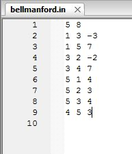

Exercitii rezolvate
- Se da un graf orientat conex cu N noduri si M muchii cu costuri. Definim un lant ca fiind un sir de noduri cu proprietatea ca intre oricare doua consecutive exista o muchie. Costul unui lant este dat de suma costurilor muchiilor care unesc nodurile ce il formeaza. Definim un ciclu ca fiind un lant cu proprietatea că primul element al sau este egal cu ultimul. Sa se determine dacă in graful dat exista un ciclu de cost negativ. Daca nu exista, sa se determine costul minim al unui lant de la nodul 1 la fiecare dintre nodurile 2, 3, ... , N-1, N.

Pe primele 20 de linii au loc declararile tablourilor necesare. Coada este declarata la fel ca in programul anterior. Citirea datelor si initializarea unor variabile se termina la linia 35; apoi incepe algoritmul propriu zis (Bellman-Ford). La final (linia 59) se verifica daca instructiunea while s-a oprit din cauza existentei unui ciclu de cost negativ, altfel va fi afisat tabloul d.